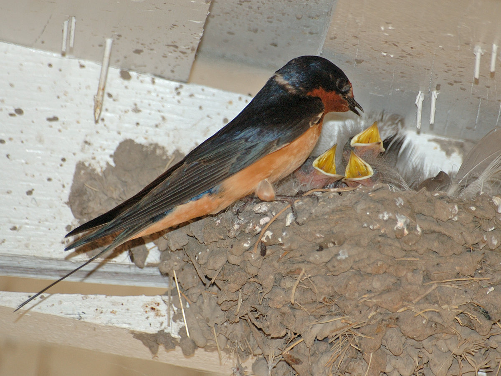

Vashon's
Visiting Songbirds
Beginning with gratitude...
-
Dennis Paulson
- Netta Smith, Gregg Thompson, Steve Mlodinow, Damon Calderwood, and a few others
- Alan Huggins (BBEAR & EOB classes)
-
Ed Swan & his book The Birds of Vashon Island
- innumerable birders, photographers & members of the Vashon nature community
- Bird Songs of the Pacific NW CD (Geoffrey Keller & Gerrit Vyn)
- Sibley Guide to Birds (David Sibley)
- a plethora of wonderful online resources
- Ezra Parker
easy!

uh oh... what now?
The 5 Ws of Bird Identification
Who?
which type of bird?
What?
behavior / feeding method / song?
Where?
location and habitat?
When?
time of year?
Why (not)?
why is it not the most abundant, common species?
Who? which type of bird?
unsure, but all dark above (hard to see color) & all white below; long, angular wings
What? behavior / feeding method / song?
fast, gliding flight with occasional rapid turns and banks, occasionally dipping down and skimming the surface of water (swallow? but which one? Violet-green or Tree?)
Where? location and habitat?
Mukai Pond, Island Center Forest, Vashon; riparian habitat (correct for VG or Tree)
When? time of year?
late March (check distribution list!)
Why (not)? why is it not the most abundant, common species?
observed field marks + data collected = most likely ID
probable Violet-green Swallow
Family Trochilidae
(Hummingbirds)
- not a songbird (aka, passerine, oscine, or perching bird)
- active & acrobatic in flight; can fly backwards, forwards, upside down; body can fly positioned vertically vs. horizontally
- almost always hovers while feeding
- very long bill & tongue for specialized feeding of nectar at flowers; also feeders, sap from sapsucker wells & tiny insects
- iridescent plumage
- very small legs & feet (Apodiformes); used for scratching or perching, not walking
- 2 species recorded on Vashon (Anna's is resident)
Rufous Hummingbird
Selasphorus rufus

Rufous Hummingbird
- orange-red gorget (throat) & rufous plumage
- male performs courtship display for female; his wing feathers are modified to produce a trill or buzz
- wide range of suitable habitats
-
earliest arrivals from Mexico in early February
- arrival may coincide with salmonberry/currant blooming
- latest records in late September
Rufous Hummingbird
call: "chase" call is a buzzy zeee-zeee-zeee-chuppity-chuppity-chup also, chip notes
aerial display: male dive display with wing buzz is a stuttering, humming dit-dit-dit-deeer
Rufous Hummingbird

male
Rufous Hummingbird

female
Rufous Hummingbird
Rufous Hummingbird

Rufous Hummingbird
Family Tyrannidae
(Flycatchers)
- most species have a plain coloration: brown, gray or yellowish with white markings
- many have a slightly crested appearance
- typically exhibit an upright posture
- look for behaviors such as persistent wing-flicking and/or tail pumping (bobbing)
- wide, flattened bill for insect catching & well-developed rictal bristles
- diet is almost exclusively insectivorous (highly unlikely at feeders)
- NA species usually employ a "sallying" feeding method -- fly up directly to catch an insect from perch, then return to same perch
- 7 species recorded on Vashon (all migrants)
Olive-sided Flycatcher
Contopus cooperi

Olive-sided Flycatcher
- largest of our flycatchers
- relatively short tail; dark head/flanks constrast with white throat/belly ("vested" appearance); lacks wing bars
- utilizes clearings, forest openings and edges for hunting
- often stake out territorial boundaries by calling repeatedly from the top of a snag or tall tree; habit of perching conspicuously is good ID clue
- earliest arrivals from Central or South America in early May
- latest records in early September
Olive-sided Flycatcher
song: a penetrating, whistled quick-free-beer
Ed's book transcribes as whut, whee year
dawn song & atypical song:
call: pip-pip-pip call notes & twitter
Olive-sided Flycatcher

Olive-sided Flycatcher
Western Wood-Pewee
Contopus sordidulus

Western Wood-Pewee
- dark head & generally dusky & drab coloration; very long wings
- does not generally flick or bob tail like Empidonax sp.
- open forest, forest edge & riparian woodlands provide suitable habitat
- earliest arrivals from South America in late April
- latest records in late September
Western Wood-Pewee
song: a burry, descending pee-er
dawn song: a continuous, burry a-phee-a-reet, pee-er, a-phee-e-reet, pee-er...
call: a burry eeeep
Western Wood-Pewee
Western Wood-Pewee

Western Wood-Pewee
Willow Flycatcher
Empidonax traillii
Willow Flycatcher
- brownish in coloration; weak eyering; shorter-winged than Pewee
- primarily eats flying insects; occasionally eats berries
- prefers brushy vegetation in wet areas, esp. riparian willow thickets
- probably breeds here, but have yet to confirm with evidence
- earliest arrivals from Mexico, Central or South America in mid-May
- latest records in late September
Willow Flycatcher
song: primarily FITZ-bew phrases, along with occasional similar sounding fizz-bew and creet notes
reminiscent of a sneeze, or perhaps an expletive
call: common call is a thick, dry whit
Willow Flycatcher
Willow Flycatcher

Willow Flycatcher
Pacific-slope Flycatcher
Empidonax difficilis
Pacific-slope Flycatcher
- easily the most abundant flycatcher on Vashon
- yellow or greenish coloration; teardrop-shaped eye ring is somewhat distinctive
- coniferous or deciduous forest; wooded lots
- typically remains hidden in dense & shady canopy, yet calls loudly & repetitively
- cavity nester, but known to nest on porches & above light fixtures
- earliest arrival from Mexico in late March
- latest records in late September
Pacific-slope Flycatcher
song: composed of 3 elements: pe-SEET, ptick, and seet
dawn song: delivered in a rapid, continuous fashion
call: position call (can be given by both sexes) is strongly up-slurred psea-eet; similar to a human attention whistle -- e.g., hailing a cab
Pacific-slope Flycatcher
Pacific-slope Flycatcher
Pacific-slope Flycatcher

Family Vireonidae
(Vireos)
- dull coloration (in Latin, "little green bird")
- feed by gleaning (non-aerial method of eating prey from foliage and other substrate)
- bill cylindrical (unlike flycatchers) and slightly hooked (unlike warblers)
- songs are repetitive and persistent
- 4 species recorded on Vashon (Hutton's is resident)
Warbling Vireo
Vireo gilvus

Warbling Vireo
- can be inconspicous and hard to locate; much easier to learn its song
- pale lores & supercillium (eyebrow) are only notable markings
- distinguished from Ruby-crowned Kinglet, Hutton's & Cassin's Vireo by lack of wingbars
- habitats include bushy, deciduous growth, often in riparian settings
- nest often hosts Brown-headed Cowbird eggs
- earliest arrivals from Mexico or Central America in early April
- latest records in late September
Warbling Vireo
song: a husky undulating, rapid, run-on warble
call: a harsh or buzzy, nasal eeeee-ah; also a soft, dry vit
Warbling Vireo
Warbling Vireo
Warbling Vireo

Family Hirundinidae
(Swallows)
- small bill with wide, gaping mouth
- streamlined bodies & long, pointed wings
- aerial insectivores -- feed by swooping and coursing over any fairly open area where insects are abundant
- on Vashon, that includes areas around the docks, ponds, beaches, open meadows & fields
- most species are loosely to strongly colonial in nesting strategy; enclosed nests (mud, burrows, nest boxes, crevices)
- prolonged, adverse weather events can be fatal for young & immature
- 6 species recorded on Vashon (all migrants)
- numbers are few, but Northern Rough-winged Swallow nest in the cliffs/banks at Pt. Robinson, KVI & Raab's Lagoon; Tree Swallow in boxes near water; and Cliff Swallow on man-made structures
Purple Martin
Progne subis

Purple Martin
- largest swallow; solid bluish or purplish coloration in males (only dark-bellied species)
- typically feed higher than other swallows & further out over open water, but calls can often be heard
- as recently as the 1980s, not easily found in WA state (possible reasons include: adverse weather events, lack of historical nesting sites & competition from introduced cavity nesters)
- in the 1990s, Rich Siegrist installed nest boxes on pilings (Lisabuela, Tramp/Ellisport, Sylvan Beach, Fern Cove & Dockton)
- hosted anywhere from 30 - 70 nesting pairs, currently around 50
- earliest arrivals from South America in early April
- latest records in late September
Purple Martin
song: a rich, liquid warble of bubbling notes interspersed with grating or clicking sounds
call: alarm call is a burry zeeert
Purple Martin

male
Purple Martin

female
Purple Martin


Purple Martin
Barn Swallow
Hirundo rustica

Barn Swallow
- midnight blue above, with orange or buff underparts; rusty throat & forehead patches
- noticeably longer forked tail than other swallow species
- nests are made of mud pellets and some fibrous material
- orginally nested in caves & natural crevices, but by mid-20th century, there was a near complete shift (99% in WA) to using man-made structures (eaves, bridges, docks, etc.)
- require nearby insects & mud source + suitable man-made structure + humans that are amenable to nesting
- earliest arrivals from Central or South America in early April
- latest records in mid-October
Barn Swallow
song: a long sequence of continuous, squeaky warbles punctuated by dry, grating rattles
call: commonly heard call is a husky vit or vit-VEET
Barn Swallow
female & male
Barn Swallow


Barn Swallow
Barn Swallow
Barn Swallow

immature
Violet-green Swallow
Tachycineta thalassina

Violet-green Swallow
- likely our most abundant swallow on Vashon
- all white below & (as name implies) males are a mixture of violet-green hues above
- short-tailed, causing wings to extend well beyond tail tip
- historically, nested in natural cavities & crevices, but have adapted very well to using nest boxes (espcially near water)
- along with Barn Swallows, can congregate in large numbers post-breeding in the late summer/early fall
- earliest arrivals from CA, Mexico or Central America in early March
- latest records in late October
Violet-green Swallow
call: typical vocalization, given singly or in pairs, is a sharp, chirping chee or chee-chee
(during breeding season at dawn, long series of these calls are given in flight near nesting areas)
call & song: chee-chee calls and songs
call: chee calls and up-slurred creaky notes
Violet-green Swallow

Violet-green Swallow

Violet-green Swallow
Family Turdidae
(Thrushes)
- family includes several iconic species; perhaps best known for their singing ability
- plump, upright birds often seen on the ground
- foraging generalists, eating arthropods, worms & fruit (spreading seeds of many plants)
- glean food from ground or vegetation; ground sallying
- can be highly territorial at times; some species forming large flocks in migration/winter
- utilize a wide variety of habitats for feeding & nesting
- 7 species recorded on Vashon (Varied Thrush & American Robin are resident)
Swainson's Thrush
Catharus ustulatus

Swainson's Thrush
- songs and calls are easily heard Island-wide
- long-legged; brownish back & wings; light-colored breast with brown spots; "spectacled" appearance
- very similar in appearance to Hermit Thrush, but only brief overlap in status
- generally solitary; stays obscured in low foliage or understory (fruiting plants are best chance for sighting)
- tend to fly at low altitudes; one of the most common migrants killed in colisions with windows/buildings
- earliest arrivals from Mexico or Central America in mid-April
- latest records in mid-October
Swainson's Thrush
song: a rolling, flute-like song which spirals upwards
call: a clear, ringing queep; given most frequently during migration
call: a whit call; often given by alarmed birds and frequently given during the breeding season
call: a whit-burrr call is also given in alarm
Swainson's Thrush

Swainson's Thrush
Swainson's Thrush
Swainson's Thrush